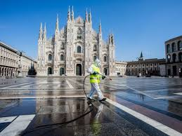
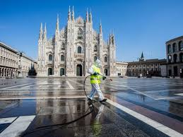

Milan Cathedral is the cathedral church of Milan, Lombardy, Italy. Dedicated to the Nativity of St Mary, it is the seat of the Archbishop of Milan, currently Archbishop Mario Delpini. The cathedral took nearly six centuries to complete: construction began in 1386, and the final details were completed in 1965. It is the largest church in Italy — the larger St. Peter's Basilica is in the State of Vatican City, a sovereign nation — and the second largest in Europe and the fourth largest in the world.
 
